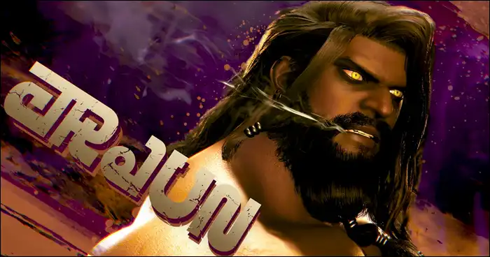
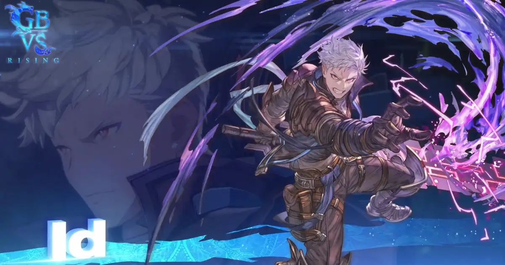

Welcome to our website! We are dedicated to providing you with the latest news, updates, and information about the fighting game community. Our team of passionate gamers and enthusiasts work tirelessly to bring you the most relevant content, including character reveals, game updates, and exclusive interviews with industry professionals.
Whether you're a seasoned player or just starting out, our website has something for everyone. We strive to create a welcoming and inclusive environment where players of all skill levels can come together to share their love for fighting games.
Thank you for visiting our website, and we hope you enjoy exploring all that we have to offer!

Just try and show them up. Samira and Sett complete the 2XKO roster on October 27.
Watch the latest character reveal!
Marvel Token revals the rest of the 1st season pass characters.

Watch the Marvel Token Season Pass reveal!

Arjun is Street Fighter 6's newest and original character to be added. He is an ex-cop/detective turned fugitive due to a crime he didn't commit. As a master of bare-knuckle yoga, he possesses the ability to manipulate his breath.

Id—skilled swordsman and vessel of Bahamut's destructive power—has found his peace as the local Mr. Fix It in the windswept township of Folca.


© 2026 FGC WEEKLY. All rights reserved.